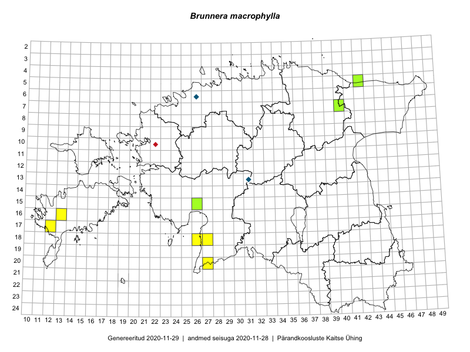

Brunnera macrophylla
Uuendatud: 2016-12-01
Kaardile koondatud taksonid: Brunnera macrophylla (Adams) I.M.Johnst.

Kaart põhineb 7 kirjel, neist vaatlusi 6 ja eksemplare 1.
Viited andmebaasikirjetele
- Peedu Saar, Liina Oja: 2015-05-20: 18-27: GPS punkt
- Peedu Saar, Liina Oja: 2015-05-20: 18-26: GPS punkt
- Thea Kull, Peedu Saar: 2015-04-25: 05-42: GPS punkt
- Ott Luuk, Eerik Leibak, Liisa Rennel: 2015-05-20: 20-27: ala
- Ott Luuk, Eerik Leibak, Liisa Rennel: 2015-05-20: 20-27: GPS punkt
- Mari Reitalu: 2015-08-25: 17-12: ala
- Peedu Saar, Thea Kull: 2015-04-25: 05-42: GPS punkt